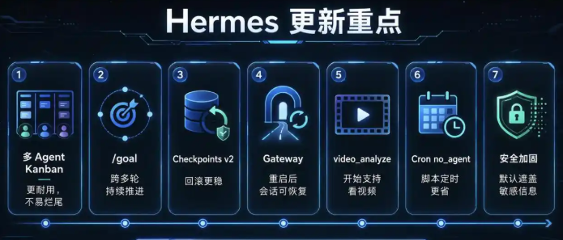
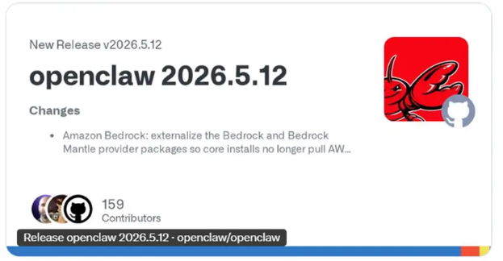

AI工具 × 增长实操
关掉电脑AI还在帮你干活
——Agent的下一场战争，不在模型在运行时
Hermes v0.13.0 + OpenClaw 5.12，同一天释放了同一个信号
周一到周五，AI新闻是"谁家的模型更聪明"。但本周，两个重磅更新同时在说另一件事：Agent的竞争已经从"聪明"转向"能干活"。
一个是Hermes Agent v0.13.0——关掉终端，AI还在修bug。一个是OpenClaw 5.12——AI不仅能写代码，还能接电话。
这不是巧合。这是方向。
先说Hermes Agent。
这个项目由Nous Research团队开发，开源免费。5月7日发布v0.13.0版本，代号"The Tenacity Release"（韧性）。295位贡献者，864次代码提交，588个PR，修了8个P0安全漏洞——工程量不小。

但它真正炸裂的，是两个功能。
第一个：/goal——持久化目标循环。
用过Claude Code、Cursor的都知道，AI写代码已经很强了。但有个致命问题：聊天窗口一关，一切归零。
改到一半的任务，下次得从头说起。像极了那个"很聪明但没有主动性的实习生"——你不盯着他，他就停下来。
/goal解决了这个问题。
工作流程：
1. 你输入：/goal 把这个项目的测试全修好
2. AI开始自动执行
3. 每修一处先存档（Checkpoints v2）
4. 修坏了自动回滚，修对了继续下一个
5. 内置"裁判模型"判断：目标达成了吗？
6. 没达成→继续；达成→停止
7. 最多跑20轮
8. 关掉终端也无所谓，第二天 /resume 继续
作者亲测：输入命令去泡茶，回来已经自动修了4个文件。全程无人值守。
注意，这不是什么高深的多模态推理。它解决的是一个朴素到几乎被忽视的问题：记住目标，别停下来。
第二个：Kanban——多Agent协作任务板。
一个人干活不够？那就组个团队。
hermes kanban create "调研北美AI融资" --assignee researcher-a
hermes kanban create "调研欧洲AI融资" --assignee researcher-b
hermes kanban create "汇总成报告" --assignee writer --parent t_r1 --parent t_r2
三行命令，AI团队就组建好了。
researcher-a和researcher-b并行执行调研，writer等两个都完成后自动启动汇总。每个worker是独立进程，有自己的记忆和工作目录。还有心跳检测、僵尸进程回收、预算上限、幻觉恢复门（防止AI假装干完了）。
这不再是聊天，这是项目管理。只不过项目经理也是AI。
"下一次coding agent的跳跃，可能不是更聪明的模型。可能是让工作在聊天窗口关闭之后继续活着的运行时。"
—— AlphaSignal
Hermes的定位很清楚：它不是Claude Code的替代品，它是Claude Code旁边的那一层。Claude Code负责"做"，Hermes负责"不忘记要做什么"。
同一天（5月12日），OpenClaw也推了大更新。
如果说Hermes在做"让AI能持续干活"，那OpenClaw在做的是"让AI能接一切渠道的活"。

这次更新四个重点：
1. 语音通话能力上线
AI不再是只能打字的工具了。Discord频道里直接语音对话，Telegram也能打电话。底层用的是OpenAI Realtime API + Gemini语音桥接，支持打断、轮次检测、实时转写。
想象一下：你开车的时候，直接语音跟AI说"帮我看看今天的日程，再回复一下王总的消息"。它真的能做。
2. Codex CLI会话可继续绑定
用OpenAI Codex CLI写代码的同学注意了：以前Codex的会话是"一次性的"，关了就没了。现在OpenClaw把Codex的会话生命周期完整接管了——任务注册、进度追踪、认证转发全部打通。
说白了就是：Codex负责写代码，OpenClaw负责让它"不断线"。
3. 微信渠道插件升级到2.4.3
企业微信的WeCom插件升级到官方2.4.3版本。安装更稳定，包目录冲突问题修了。微信13亿用户，AI通过这个口子直接触达——这对AI工具的普及来说，比任何技术更新都重要。
4. 性能和稳定性大修
会话转录内存消耗降低89%（从252MB降到27MB）。HTTP/2崩溃修复、SSRF安全加固、Slack/Telegram/WhatsApp/飞书等十几个渠道的Bug批量修了一遍。8个P0安全漏洞修复，加了设备配对审批、浏览器配对验证等安全机制。
表面上看，Hermes和OpenClaw是两个不同的项目。但把它们的更新放在一起看，信号非常清晰：
AI Agent的战场，已经从"模型"转向"运行时"。
什么叫运行时？
模型是"大脑"——负责理解你说的什么、怎么回答。运行时是"身体"——负责记住目标、管理进程、连接渠道、协调团队、处理异常、存档回滚。
打个比方：GPT-4是智商150的天才，但如果你每次只能跟他聊5分钟，然后他就失忆了，那这个天才对你来说毫无用处。你需要的是一个能记事、能持续工作、能跟别人协作、还能接电话的助手。
Hermes和OpenClaw都在做这件事。方向不同但目标一致：
你可能觉得这些都是程序员的事。但趋势已经很明确了：
第一，AI从"工具"变成"员工"。
以前你用AI，是你问一句它答一句，本质是搜索引擎升级版。现在AI可以接收目标、自主执行、团队协作、多渠道响应——这是员工的行为模式。
上个月百度Create大会上李彦宏提了一个概念叫DAA（日活智能体数），对标移动互联网的DAU。他说"第一次，AI的主角不是模型，而是应用"。Hermes和OpenClaw的更新，正在让这件事变成现实。
第二，AI的竞争格局在变。
过去一年大家都在卷模型：谁的参数更大、谁的跑分更高。但从这两个更新来看，下一阶段的关键竞争点可能是运行时——谁能把AI的任务管理做得最好，谁就能留住用户。
道理很简单：模型是商品，运行时是护城河。GPT-4和Claude你能同时用，但你在Hermes上建的项目、OpenClaw上配的微信接入，迁移成本很高。
第三，现在就是学习窗口期。
Hermes和OpenClaw都是开源免费的。不会用没关系，先装上试试。当你习惯了"跟AI分配任务、让它自己干"，你就不会回到"盯着AI一行一行改代码"的旧模式了。
就像从手动挡到自动挡——不是你不会开了，是你不想回了。
Hermes那篇文章的结尾提了一个问题，我觉得值得展开说：
"大多数Agent的demo能跑十分钟。
难的是第十一分钟。"
前十分钟，AI帮你写了个函数、生成了个表格、翻译了段文字——很酷。但第十一分钟会发生什么？
✅ 上下文撑不住了（忘了前面在干嘛）
✅ API限流了（被封了或者排队了）
✅ 代码改坏了（不知道怎么回滚）
✅ 多个任务之间冲突了（没人协调）
✅ 聊天窗口关了（一切归零）
Hermes用/goal解决"忘了目标"的问题，用Kanban解决"没人协调"的问题，用Checkpoints解决"改坏了回滚"的问题。
OpenClaw用Codex会话接管解决"关了窗口一切归零"的问题，用语音通话解决"只能打字"的问题，用微信/企业微信插件解决"触达渠道"的问题。
它们都在攻克"第十一分钟"。
这才是2026年AI工具最值得关注的战场。
如果你一直在关注AI工具，我的建议是：
别只盯着"谁家的模型又更聪明了"。多看看谁能让AI真正持续地干活。因为聪明是天赋，但能干活是能力。天赋决定上限，能力决定下限。
对普通人来说，真正有意义的AI工具，不是那个跑分最高的，而是那个你关了电脑它还在帮你忙的。
信息来源：
Hermes Agent GitHub（Nous Research） · v0.13.0 Release Notes（2026.5.7）
OpenClaw GitHub · v2026.5.12 Release Notes
百度Create 2026大会（2026.5.13-14）
💬 你在用什么AI工具？遇到过"第十分钟就卡住"的问题吗？
评论区聊聊，我帮你分析
AI工具 × 增长实操 · 不吹不黑，只讲能用的